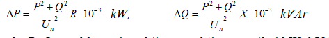

Uch fazali elektr uzatish liniyasida aktiv va reaktiv quvvat isrofi quyidagi formulalardan aniqlanadi:

bu erda: P, Q – yuklamaning aktiv va reaktiv quvvatlari kW, kVAr;
Ux - liniyaning nominal kuchlanishi, kV;
R, X – bir fazaning aktiv va reaktiv qarshiliklari, Om.
Bunda: Ix - o'tkazgichdan o'tadigan tokning hisobiy qiymati, A; tn - q.t tokining
vaqt davomiyligining keltirilgan qiymati, s; S - o'zgarmas son (po'lat uchun S=74, mis uchun S=195, mis
simli kabellar uchun S=182, alyuminiy simli kabellar uchun S= 112).